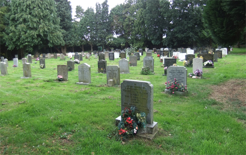
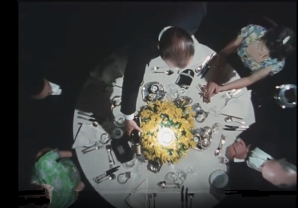
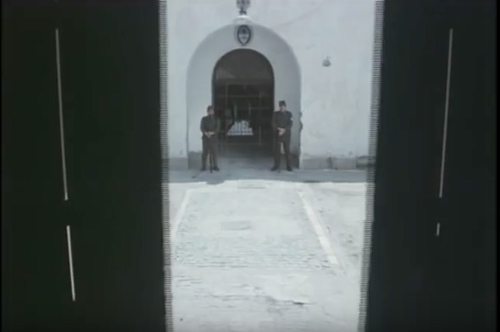
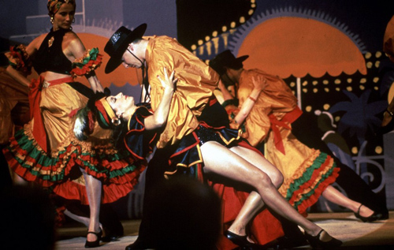

Reepham Cemetary in Norfolk where Iris was buried.

The striking overhead view of the dinner in the 'Jardin des Cygnes' - presumably filmed on set.

The outdoor scenes in 'Argentina' were filmed in Spain.

The dazzling tango scene with Lola Valdez was filmed on set.